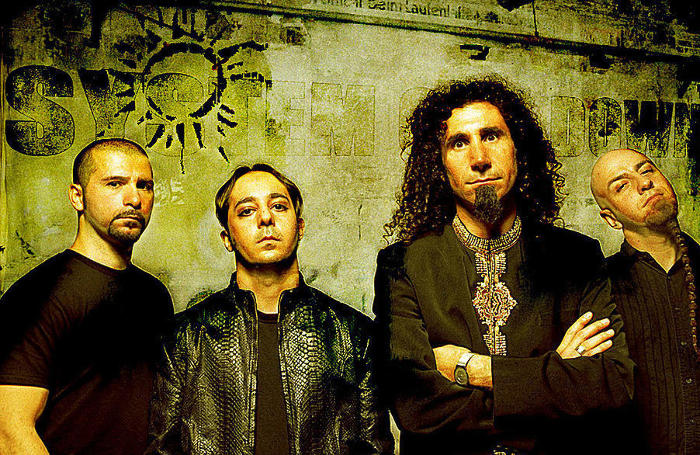
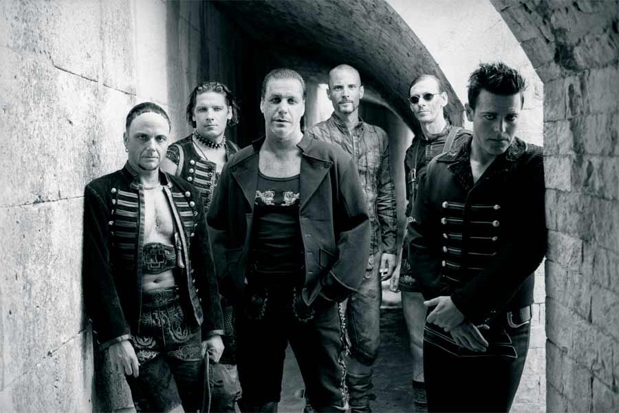
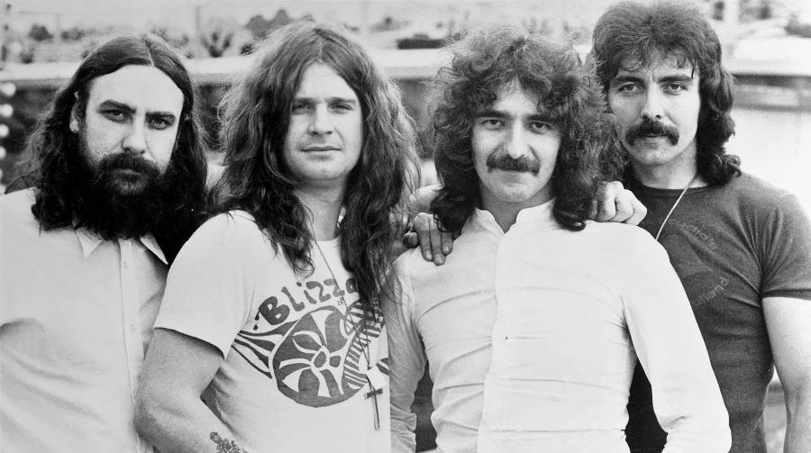

Топ исполнители metal
Metallica

Metallica — американская метал-группа, оказавшая большое влияние на развитие тяжёлой музыки в целом. Входит (наряду с группами Slayer, Megadeth и Anthrax) в так называемую «большую четвёрку трэш-метала». В 2009 году Metallica была введена в зал славы рок-н-ролла. Альбомы Metallica были проданы в общей сложности в количестве более 110 миллионов экземпляров во всем мире, что делает эту группу самой коммерчески успешной из всех метал-групп. Альбом группы, названный Metallica, является самым продаваемым альбомом за всю историю метала: его продажи составляют более 15 077 000 копий в США.
System of a Down
System of a Down (SOAD) — американская метал-группа, образованная в 1994 году в Лос-Анджелесе Сержем Танкяном и Дароном Малакяном. В период с 1998 по 2005 год группа выпустила пять студийных альбомов, каждый из которых стал платиновым (наиболее успешный — мультиплатиновый Toxicity), общим тиражом свыше 20 миллионов экземпляров. В 2006 году участники System of a Down решили временно приостановить совместную деятельность и заняться сольными проектами. 29 ноября 2010 года группа объявила о проведении европейского турне в 2011 году.
Rammstein
Группа Rammstein была основана в январе 1994 года в Берлине гитаристом Рихардом Круспе. Свою музыкальную карьеру он начал в Западной Германии в группе «Orgasm Death Gimmick», сбежав из ГДР в 1989 году. После объединения Германии он вернулся на родину в город Шверин. Круспе, поклонник Kiss, искал возможности соединить любимый им хард-рок с электронным звучанием индастриала. В это время он познакомился с Оливером Риделем (бас-гитара) и Кристофом Шнайдером (ударные), позднее с Тиллем Линдеманном, игравшими в различных панк-рок-группах. В этом составе они организовали группу Rammstein. Линдеманн, игравший прежде на барабанах (группа First Arsch) занял место солиста, ему же принадлежат тексты песен, исполняемые группой. Все музыканты группы — из бывшей Германской Демократической Республики.
Black Sabbath
Не без оснований английскую группу Black Sabbath считают прародителями стиля хэви-метал, а также дум-метал. В формировании жанра принимали участие и другие коллективы — Deep Purple, Led Zeppelin, Uriah Heep и ряд других известных команд, однако именно Black Sabbath первые заиграли классический хэви-метал, оказав на эту музыку огромнейшее влияние.
Пожалуй, нет ни одной металлической группы, появившейся в 70-80-е, на которых, так или иначе, не повлияли бы альбомы Black Sabbath и сами музыканты — вокалист Джон "Оззи" Осборн (John Ozzy Osbourne), гитарист Тони Айомми (Tony Iommi), басист Терри "Гизер" Батлер (Terry "Geezer" Butler) и барабанщик Билл Уорд (Bill Ward). И хотя больше половины своей истории группа существовала в иных составах, порой с единственным оригинальным участником, именно вышеуказанный, первоначальный вариант Black Sabbath внес наибольший вклад в развитие как самой группы, так и всего жанра в целом.
Iron Maiden

Iron Maiden (в пер. с англ. — "Железная дева" - средневековое орудие пыток, представлявшее собой сделанный из железа шкаф в виде женщины, одетой в костюм горожанки XVI века) — британская хэви-метал-группа, которая в начале 1980-х гг. являлась одной из известнейших представительниц Новой волны британского хэви-метала, а позже оказала значительное влияние на развитие металла в целом.